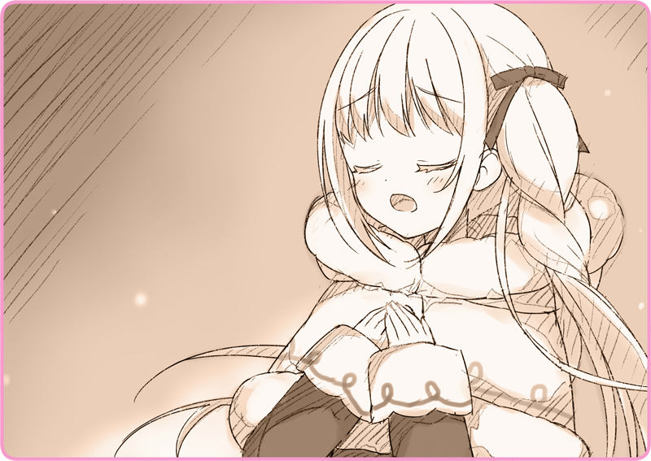

灰桜の住処に帰ってくるころには、すっかり辺りは暗くなっていた。アルタリアの冬の夜は、狼のように早い。昼間はからりと晴れていたが、ちらほらと雪が舞い始めていた。
「あなたのマスターはもう帰っているのかしら」
「いつ帰ってくるとか、聞いてないの？」
リリアは嘆息した。灰桜が呑気なのか、そのマスターが鷹揚なのか。
「マスターは、遠間博士ってひと？」
「どういう意味？」
「なんていうか……先進的な人なのね」
灰桜はにこにこと笑っている。どうやらよほどの変わり者らしい。
「……あら？」
角を曲がったところで、進路を塞ぐように、一人の男が路地から現れて立ちはだかった。
厚いコートの襟を立てた、大柄な男だ。帽子を目深にかぶっていて、表情は伺えない。
「もしかして……あの人が遠間博士？」
「え、違うの……？」
灰桜は首を傾げている。
リリアの背筋に寒気が駆け抜けた。
「……誰？」
足を止めて、声を投げかける。灰桜の袖を取って、歩みを押しとどめた。
「ずいぶん上等な人形を連れてるじゃないか」
男は低い声で、唸るように笑った。
「リリアお嬢さんだね。一向に連絡がないから心配していたんだ」
「あなた、もしかして……」
リリアはその正体に検討がついた。
じわりと、手のひらに汗が浮かぶのが分かる。
「人形を連れた女の子がいるって話に聞いたんでね、もしかしてと思って追いかけてきたんだよ」
「……こっちにも事情があるのよ。待たせたのは悪かったわ」
「ああ、レディには準備が必要だからね。それで、もう支度は整ったのかい？」
「こんな時間よ、出直してきて」
「そうかい、それは失礼……ああ、ご挨拶だけでもしておこう」
帽子を軽く取って、慇懃に礼をする男。
それからゆっくり雪を踏みしめながら近づいてきて、名刺を差し出した。
「……連絡先なら控えてるわ」
「いいから、受け取りな。ご連絡はお忘れなく」
「………」
リリアは名刺を見もせずに受け取った。
「しかし、見たことのない人形だな。こりゃすごい、まるで人間だ……」
隣にいる灰桜を、まじまじと見つめてくる。
「いいのよ」
自己紹介しようとする灰桜を、リリアは押し留めた。
「行きましょ」
足早にその場を去っていく。
「ごきげんよう」
男はそれ以上深入りしてくることはなかった。
リリアは振り返ることなく、灰桜の手を引いて足早にその場を去っていった。
＊ ＊ ＊
夕食に、灰桜は簡単なスープとパンを振る舞ってくれた。ゆっくりとスプーンで口に運んでいると、不意に質問される。
「そうね……そんなところ」
「灰桜、それはダメよ」
「もしまたあの人に会ったら、私を呼んで」
なにも分かっていない様子で、にこにこと笑っている。
こういうところは、いかにも人形らしいと思う。猜疑心や警戒心がまるでなく、リリアの言うことをそのまま信じ込んでいる。
「灰桜、あなたはまるで子供ね」
「……いいの、そういう話を聞きたいんじゃなくて……」
「いえ……なんでもないわ。気にしないで」
「灰桜、あなたも今日はいっぱい動いたから……」
そう笑って、紙製ストローで、なにやら油のような液体をごくごく飲んでいる。
どうやらそれが燃料で、背中の煙突からぽっとかすかな発炎が漏れる。
かすかなシナモンの匂い。もしかしたらすこしハーブティーが残っていたのかもしれなかった。
「灰桜、ありがとうね」
食事も終わって、ふとリリアはそう感謝の言葉を伝えた。
食器を片付けながら、灰桜は不思議そうにしている。
「泊めてくれて、おいしい食事まで用意してくれて、お金のことも……」
照れくさそうに笑って、でもどこか誇らしげにしている。
「なにかお礼をさせてくれる？」
「でも、悪いわ」
灰桜はしばし考え込んで、やがて――
弾んだ声で、そう提案した。
「歌？」
「そんなものでいいの？ もっと……」
「そう？ じゃあ……」
しばし考え込む。
昼間、展望台で言った言葉が思い出された。
「『冬の花火』なんて歌はどうかしら？」
「ちょっと違うのよ、花火といっても、実際の花火を歌ったわけじゃなくてね、冬の寒い日に……なんて説明すればいいのかしら」
検討もつかない様子で、小首をかしげている。
「……でも、歌の説明するのは野暮ね。それでよかったらプレゼントするわ。聞いてくれる？」
ぱちぱちと小さな手を打ち鳴らしている。
足を揃えると、膝の上に両手を置いて、じっと傾聴する姿勢をとった。
「………んっ」
何度か、喉の調子を整える。
暖炉であたたまった、湿った空気を吸い込む。
「～～～♪」
胸に手を当てて、そして歌声を震わせた。

「～～～♪ ～～～♪」
最初は椅子に座りながら。
でももっと伸びやかな歌を届けたくて、気づけば立ち上がっていた。
冬の花火。
夜空にまたたく奇跡よ。
我らを包み、光をまたたかせたまえ……。
レバルジャク少女歌劇団でずっと歌い継がれてきた一曲だ。
「～～～♪」
やがて最後の裏声を響かせて。
劇団でいつもそうしているように、うやうやしく一礼した。
圧倒された様子で、目を白黒させている。
「そんな、大げさよ」
興奮した様子で、気持ちを伝えてくれる。
くすぐったくて、でも悪くない気分だった。
「もぅ……これでいい？」
「もっと歌ってあげたいところだけど……もう夜も遅いから」
「まあ……疲れたのは、疲れたわね。いろいろあったから」
「あ、ちょっと……」
にこにこしながら、寝室のほうへと向かっていく。
と思ったら戻ってきた。
「え？」
「確かに、最初の歌はひどかったわね」
「そう、ね……そうかもね」
「そう、ね。また……歌いましょう？」
ぺこりとお辞儀して、そして寝室へと向かっていく。
「………」
すこし、胸が傷んだ。
でも、仕方がない。いつまでも彼女の好意に甘えるわけにもいかない。遅からず遠間博士も戻ってくるだろう。
「……ごめんね、灰桜」
消え入りそうな声で謝罪する。
「私、あなたに嘘ばかりついているわ……」
その言葉を聞いたのは、部屋の片隅で車椅子に座っている、物言わぬ人形だけ。そっと眠るように目を閉じていた。


 「どうなのでしょう、しばらく外出すると言っていたのですが」
「どうなのでしょう、しばらく外出すると言っていたのですが」